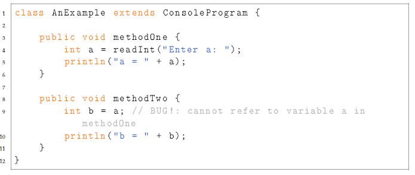
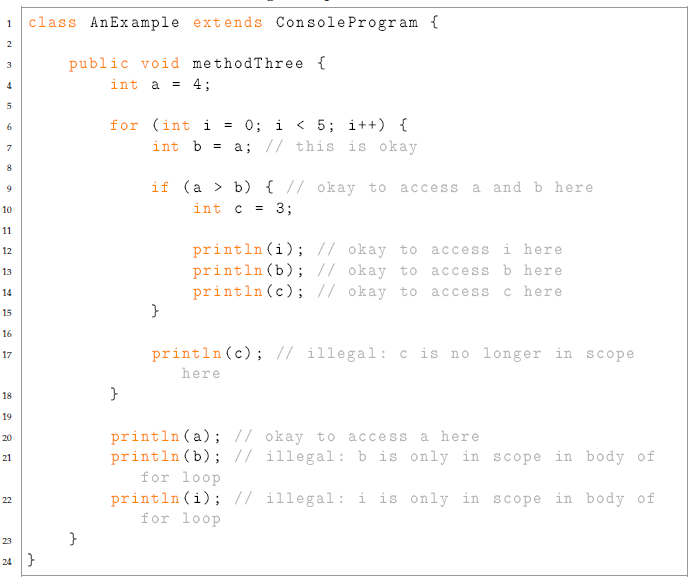
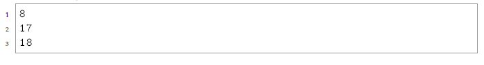
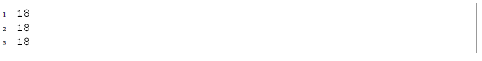
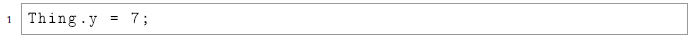
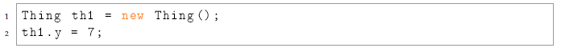
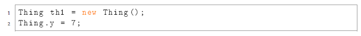

Einführung in die objektorientierte Programmierung mit Java, WS1718 - Alexander Bazo, Florin Schwappach 10. Oktober 2017
Dieser Text stammt aus einem Handout für den Kurs CS106A der Universität Stanford: http://stanford.edu/class/archive/cs/cs106a/cs106a.1142/handouts/
18-variables.pdf
Most of this handout was written by Nick Parlante
When writing a paper, you can have well-crafted, correctly spelled sentences and create “A“ work. Or you can hack out the text in a hurry. It will not look as good, but it can convey your thoughts and get the job done; it’s worth maybe a “B“ or a “C“. Computer code is not like that. Code that is messy tends to have all sorts of bugs and other problems. Messy code attracts problems like a half-eaten lollipop attracts lint. The problems and bugs in poorly written code tend to compound each other and pile up, so the code ends up nearly worthless. It has bugs. Nobody knows how to fix them or add features without creating more bugs. Once code is in that state, it is hard to escape. In a sense, code tends to be more either “A“, or “D“ or “F“. Therefore, it is best to write code that is clean to start, and keep it clean as you add features. This is one of the lessons in CS for successfully building large projects. For that reason CS 106A emphasizes the habits of clean, well-engineered code right from the start, building the right habits for the future.
One reason to write clean, well-structured code is that it works better and takes less time in the end. The other reason to write clean code is that it is just more satisfying to do a good job on something. Clear, elegant code feels right, just like any other engineering or artistic creation. Doing it right the first time is better for your engineering soul.
Consider, for example, the following snippet of code.
The variables a and b are local variables declared within different methods in the class AnExample. Because these variables are local variables, a can only be referred to within methodOne and variable b can only be accessed within methodTwo. Our attempt to initialize b using the value of a is illegal, as code in methodTwo cannot access local variables from methodOne or any other method. Because local variable values do not persist after their containing method has completed, the variable a will be destroyed when methodOne has completed execution. The next time methodOne is called, a new variable a will be created.
While we typically think of local variables as local to a particular method, in Java local variables are actually local to a block of code. While a method defines a block of code (since the opening and closing braces of the method define a block), for and while loops, if -statements, and other constructs are also considered blocks of code. If we declare a local variable inside one of these constructs, the local variable will be created when it is declared in the block and destroyed when the block ends execution. Consider the following example:
The variable a is local to methodThree, so accessing a within the for loop, or in the println is fine. The variables i and b are only in scope (i.e., “alive“) within the confines of the for loop in which they are declared. They are no longer available by the time the last two printlns try to access them. The variable c is only in scope within the confines of the if statement body in which it is declared. Note that a new copy of c will get created each time the if statement body is executed, therefore it cannot be used to store values across iterations of the for loop.
Instance variables (also known as “ivars“) are defined as part of a class, but not within any particular method of the class. Each object of the class will have its own independent copy of all the instance variables defined in a class. Instance variables are created when an object is created. They are destroyed when their corresponding object is destroyed. Instance variables can be accessed from any method defined as part of the class in which the instance variable is defined. Access to instance variables from other classes is controlled by the variable’s visibility specifier (e.g., public or private). Instance variables that are public are accessible from methods in other classes while those that are private (which is by far the more common case) are not.
In this case we have a class Thing which has an instance variable x. Each instance of the class has its own independent copy of the variable. Our main program creates three instances (objects) of the Thing class. It then sets the value of each instance’s x variable. Because there are three different Thing objects, there are three different x variables—one x variable per instance. We can change the variable values independently from one another. When we print out the results we’ll see:
As with instance variables, class variables are defined as part of a class. However, in contrast to instance variables, with a class variable there is only one copy of the variable which is shared by all instances of the class. Similar to an instance variable, a class variable can be accessed by any method in the class in which the variable is declared. Access to class variables from other classes is controlled by the variable’s visibility specifier (e.g., public or private). Class variables that are public are accessible from methods in other classes while those that are private are not.
Syntactically, class variable declarations are distinguished from instance variable declarations by using the keyword static before the variable type in the variable declaration. Because of this, class variables are sometimes referred to as static variables. Note that the constants you have seen so far were all in fact class variables, since they were defined using the keyword static, and it would make sense that all objects of a particular class would share the same value for some constant.
In this case we have a class Thing which has a public instance variable x and a public class variable y. All instances (objects) of that class share the variable. Our main program creates three instances of the Thing class. When it changes the value of y, it is changing the value shared by all the instances. When we print the results, we’ll see:
As seen in the example above, a public class variable can be accessed via the name of the class instead of through an instance of the class like this:
This has an important advantage over accessing the variable via the name of an instance of the object: it emphasizes that y is really a property of the class, shared by all the instances of a class, rather than a property of a particular instance of the class. Compare the following two code snippets:
Example 1  Example 2 Looking at Example 1, we cannot tell whether y is an instance variable or a class variable. In order to know for sure which type of variable is in use, we need to search out the declaration for the y variable and see if it used the static keyword. In contrast, looking at Example 2, we see that y must be a class variable, because we cannot access an instance variable using a class name. Because of this reason, using the name of the class (rather than the name of an instance) is the preferred method for accessing a class variable.
As we discussed in class, we will sometimes find it useful to define a “variable“ whose value does not change during the entire program. Such a variable is called a constant. In this case, the constant does not fulfill the traditional purpose of a variable (i.e., storing a temporary program value). To declare a variable as a constant, use the keyword final when declaring the variable. As mentioned above, virtually all constants are class variables. However, it is possible to also define constant instance variables or constant local variables.